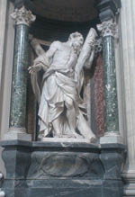

Öldükten Sonra Çok İş Gören Havariler!
Resul Petrus’un gerek Latin Roma Kilisesi’nin kurucusu olduğu, gerekse Roma’da öldüğü ve gömüldüğü “dogma”sının tartışmaya açılması, bu Kilise’nin Hıristiyanlığın beş Kilisesi’nden ilk sıradaki ve lideri olduğunu iddia eden Papalığı oldukça zor durumda bıraktı.
Çünkü Latin Roma Kilisesi “patriği” Papalar, 480 yılındaki Kadıköy Konsili’nde kabul edilen Roma/Konstantinopolis Kilisesi’nin Resul Andreas tarafından kurulduğu kararını, o günden beri tanımamışlardı. Oysa kendi kurucuları Resul Petrus’un kuşkulu hale gelmesi, Konstantinopolis Ekümenik Patrikliğinin bir havari tarafından kurulmadığı için öncül olamayacağı gerekçesini de zayıflatıyordu.
Dinî jargonda, Havari/Resul’ler tarafından kurulan Kiliselere “apostolik” deniyordu. Latin Roma Patrikliği (Papalık), Konstantinopolis Patrikliğini “apostolik” saymıyordu.
Objektif tarih taraması, bu noktada Latin ve Grek Roma Kiliselerinin en azından “kuruluş” efsaneleri uydurmakta birbirlerinden geri kalmadıklarını söylemeyi gerektiriyor:
Resul Petrus’un Eski Roma’daki yaşamı, ölümü ve adını taşıyan mezardaki cenazenin kimliği ne kadar tartışmalıysa, kardeşi olduğu rivayet edilen Resul Andreas’ın yaşarken nasıl biri olduğu, Hıristiyan öğretisini hangi diyarlara yaydığı, hatta Ekümenik Patrikliği kurduğu ileri sürülen Yeni Roma/Konstantinopolis’e ayak basıp basmadığı bile kuşkuludur!
3. yüzyılda yazılan ve Aziz Andreas’ın kutsal eylemlerini anlatan kitapta “apostolik” bir Kilise kurduğuna dair hiçbir bilgiye rastlanmazken, Konstantinopolis Ekümenik Patrikliğinin üzerinde yükseldiği Grek-Roma Kilisesi’nin kurucusu olduğuna dair iddialar, ancak 6. yüzyıl sonundan itibaren kayda geçmiştir.24
Resul Andreas/Bulgar ikonası

Resul Andreas/Laterano Bazilikası, Roma
Ancak, 12 Havari arasında İsa’nın önder saydığı Resul Petrus’un kardeşi ve ikinci en önemli Resul Andreas’ın, tüm Hıristiyan âleminde “paylaşılamayan” bir şöhret olduğu yadsınamaz.
60 yılında Peloponez Yarımadası’ndaki Patras’ta X biçiminde dikilen bir çarmıhta can veren Resul Andreas’ın kalıtları 4. yüzyılda Konstantinopolis’e getirilmiş, ama 1204 yılındaki Haçlı işgal ve talanı sonrası İtalya’ya götürülüp Amalfi’ye gömülmüştür. Resul Andreas’ın kemikleri, bugün bile çekişme konusu ve iskeleti Kiliseler arasında bölünmüş bir hazinedir.
1462’de Papa İkinci Pius tarafından Roma’ya nakledilen Andreas’ın kafatası ve Amalfi’deki iskeletinin bazı kemikleri, 1964 yılında Yunanistan’a geri verilmiş, Patras’ta adını taşıyan bazilikaya gömülmüştür. Ama başsız iskeletinin bir bölümü, Amalfi’deki bazilikada korunmaktadır.
Hıristiyanlığın bölünmesinden sonra bile her mezhepte çıkan azizler ve zaten soylular arasında en çok verilen ad, Andreas’ın adıdır. Öldükten sonra en çok çalıştırılan Havari de yine odur.
Kerametine bakınız ki, Kiev Büyük Prensi Birinci Vladimir’in imana gelmekten çok, Konstantinopolis’le yakınlaşmayı amaçlayan siyasal iradesiyle sadece 988 yılından öteye Hıristiyanlığı kabul eden Slavlar arasında Ukrayna; o günden bugüne Andreas’ın Kiev’e İsa’nın öğretisini ilk yayan aziz olduğunu iddia etmektedir.
Rusya’nın en büyük emperyal nişanı Aziz Andreas madalyası olup, günümüz Rusyası, 1690 yılından beri Çarlık donanmasının bayrağı olan Aziz Andreas Haçı’nı çağdaş savaş gemilerinde yeniden dalgalandırmaya başlamıştır...
Andreas’ın keramet alanı o kadar geniştir ki, Romanya da bu Havari tarafından Hıristiyanlaştırıldığına inanırken; İskoçya kendisini, ülkenin “Aziz Sahibi” ilan etmiştir.
24 Teoloji tarihçisi Frantiek Dvorník, The Idea of Apostolicity in Byzantium and the legend of the Apostle Andrew (Cambridge, MA: Harvard University Press, 1958) başlıklı kitabında, Resul Andreas’ın Konstantopolis’te apostolik kilise kurduğu iddiasının, Grek Roma Patriklerinin Latin Roma Papalarına eşit, hatta önceliğini kanıtlamak için uydurulan bir efsane olduğunu ileri sürer. Dvorník’e göre, Andreas’ın 3. yüzyılda yazılan “kutsal” yaşam öyküsü 6. ve 7. yüzyıllarda tahrif edilmiş, öyküye bu iddia doğrultusunda hiç yapmadığı yolculuklar ve eylemler eklenmiştir.